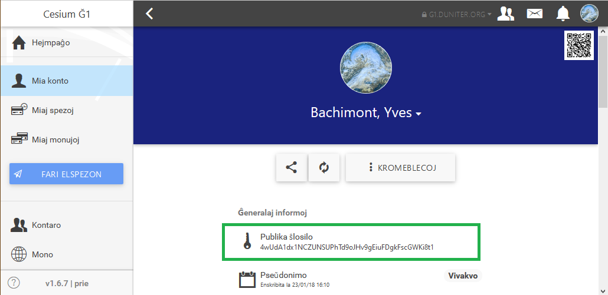

Ni imagu, ke vi proponis vendotaĵon ĉe ğchange.
La aĉetanto tutcerte petos de vi la kodon de via publika ŝlosilo, por sendi al vi la Ğ1, kies celo estas pagi vian vendotaĵon.
Vi trovos vian publikan ŝlosilon en la rubriko "Mia konto":

Por kopii ĝin en la memoreton, simple alklaku la lokon "Publika ŝlosilo".
Vi tiam povos alglui ĝin en mesaĝon, ekzemple ĉe ğchange.